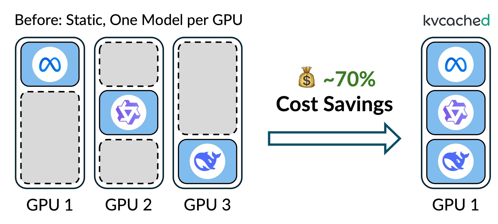
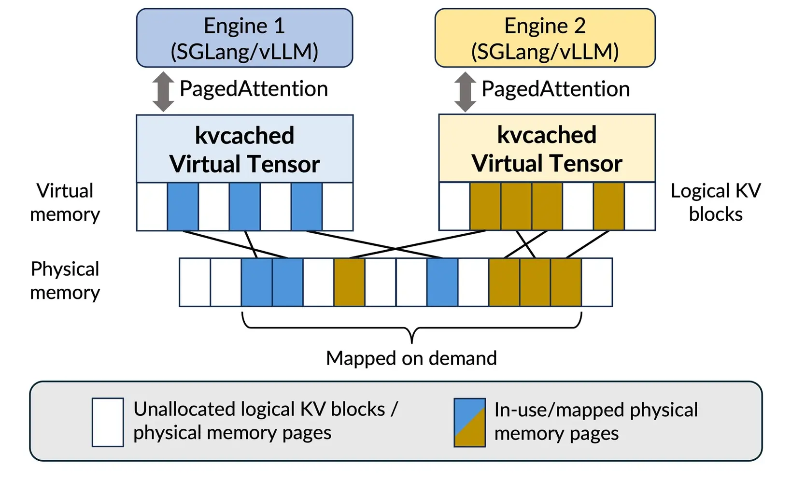
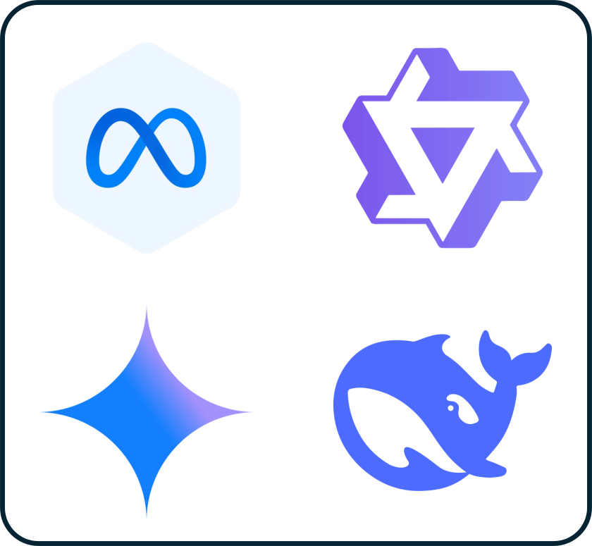
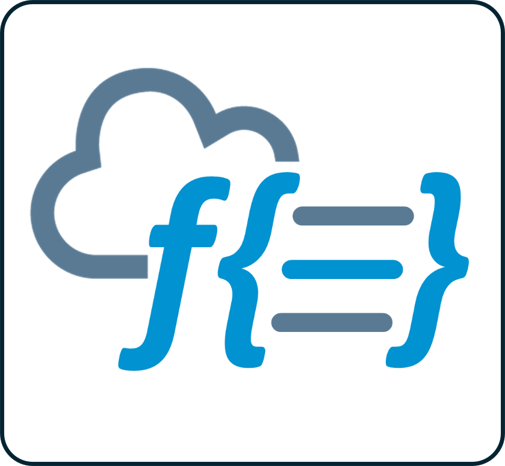
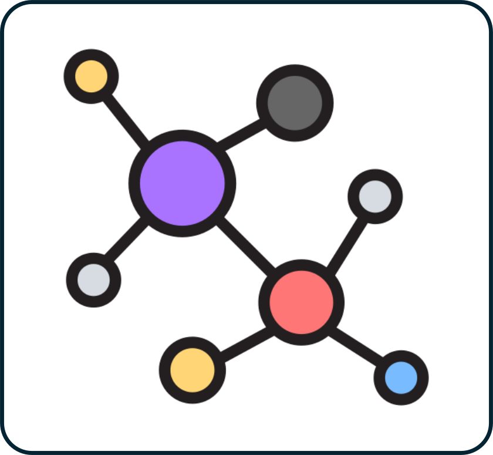
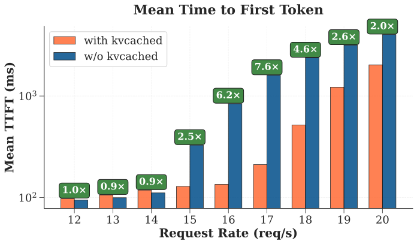
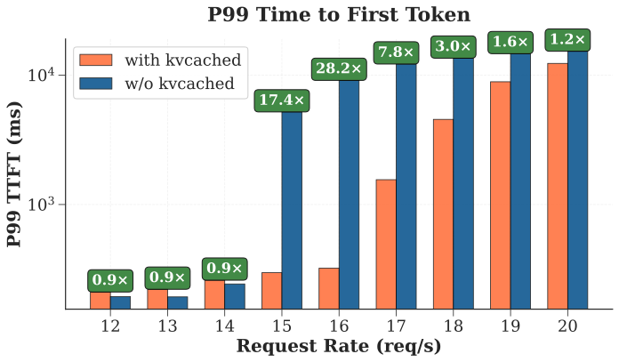

OS-style virtual memory for LLM systems. Decouple GPU virtual addressing from physical memory. Elastic, demand-driven KV cache allocation.

kvcached enables multiple LLMs to share a single GPU elastically, eliminating rigid per-model memory partitioning.
Architecture
kvcached brings OS-style virtual memory abstraction to GPU KV caches. Physical memory is mapped on demand and transparently shared across serving engines.

kvcached transparently releases idle physical memory to enable sharing across serving engines.
Allocate and reclaim KV memory dynamically to match live request load.
Decouple logical KV from physical GPU memory via runtime mapping.
Enforce memory limits and manage allocation with kvcached CLI.
Route requests to the target models and put models to sleep when idle.
Integrate with SGLang and vLLM. No engine changes needed.
Support automatic prefix caching (APC) with a configurable memory bound.
Use cases
From multi-model serving to serverless inference, kvcached adapts GPU memory to your workload.

Multiple LLMs share a GPU's memory elastically, enabling concurrent deployment without rigid partitioning.

Allocate KV cache only when needed. Models spin up and down on demand with minimal cold-start overhead.

Elastic memory across specialized models in a pipeline: retrieval, reasoning, and summarization on limited hardware.
LLM inference coexists with training, fine-tuning, or vision model workloads on the same GPU.
Performance
Benchmarked with 3× Llama-3.1-8B on A100-80G under intermittent peak workloads. kvcached dynamically shares memory instead of static reservation.


Research
Get started
# Install pip install kvcached --no-build-isolation # Enable kvcached export ENABLE_KVCACHED=true export KVCACHED_AUTOPATCH=1 # Launch your engine as usual (SGLang example) python -m sglang.launch_server \ --model meta-llama/Llama-3.1-8B-Instruct \ --disable-radix-cache --port 30000 # Or with Docker docker pull ghcr.io/ovg-project/kvcached-sglang:latest docker pull ghcr.io/ovg-project/kvcached-vllm:latest
kvcached is open source under Apache 2.0. Join the community on Slack or dive into the code.